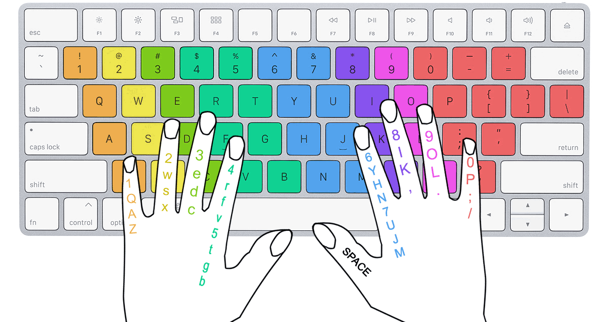

Слепая Скоростная Печать
или
Метод Эфективной Работы Печати
Слепой метод набора — методика набора текста «вслепую», то есть не глядя на клавиши печатной машинки или клавиатуры, используя все (или большинство) пальцы рук. Ранее был известен как американский слепой десятипальцевый метод. Существует уже более 120 лет.
В современном мире умение быстро и без ошибок набирать текст сродни умению считать и писать. Ведь компьютер уже много лет как стал неотъемлемой частью жизни практически каждого человека. Да, вполне можно печатать двумя пальцами, а если делать это часто, то и скорость будет приемлемая. Но эффективность набора текста в любом случае будет ниже.
Когда речь идет о преимуществах печати вслепую, обычно говорят о высокой скорости. Печатать быстро — значит экономить время, которого порой так не хватает. Плюсы скоростной печати достаточно очевидны, однако не для всех они имеют критическую значимость. Некоторые могут вполне резонно сказать: «Мне не нужно печатать быстро, потому что у меня нет необходимости набирать большие тексты, а для переписки и прочих бытовых нужд вполне достаточно смотреть на кнопки и нажимать их одним пальцем» — и будут по-своему правы, ведь им так удобно. Но дело не только в скорости как таковой — есть два очень важных момента, которые почему-то остаются без внимания.
Во-первых — это наши глаза. Если набирать текст, все время переводя взгляд с монитора на кнопки и обратно, то глаза очень быстро начинают уставать. Причина в том, что расстояние от клавиатуры до экрана обычно разное, происходит постоянная перефокусировка. При плохом освещении ситуация еще хуже — сказывается большая разница в яркости и контрастности объектов, между которыми перемещается наш взгляд. Используя десятипальцевый метод печати, смотреть на клавиатуру не нужно совсем, поэтому Вы будете меньше уставать, не будет болеть шея и глаза.
Во-вторых, при печати вслепую ввод текста становится совершенно механической работой — нужная буква безошибочно нажимается тем пальцем, которым она должна нажиматься. Вследствие чего ваше внимание фокусируется не на наборе текста, а только на том, чтобы изложить свои мысли наилучшим образом.
Есть множества сайтов для получения навыков слепой печати. Но вам я рекомендую конкретный сайт: klava.org